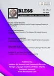
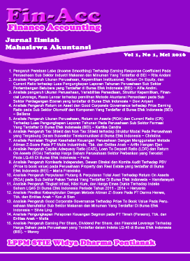
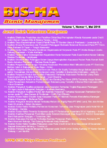
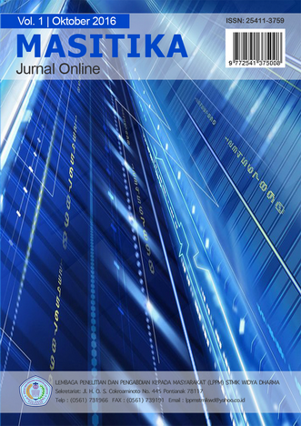
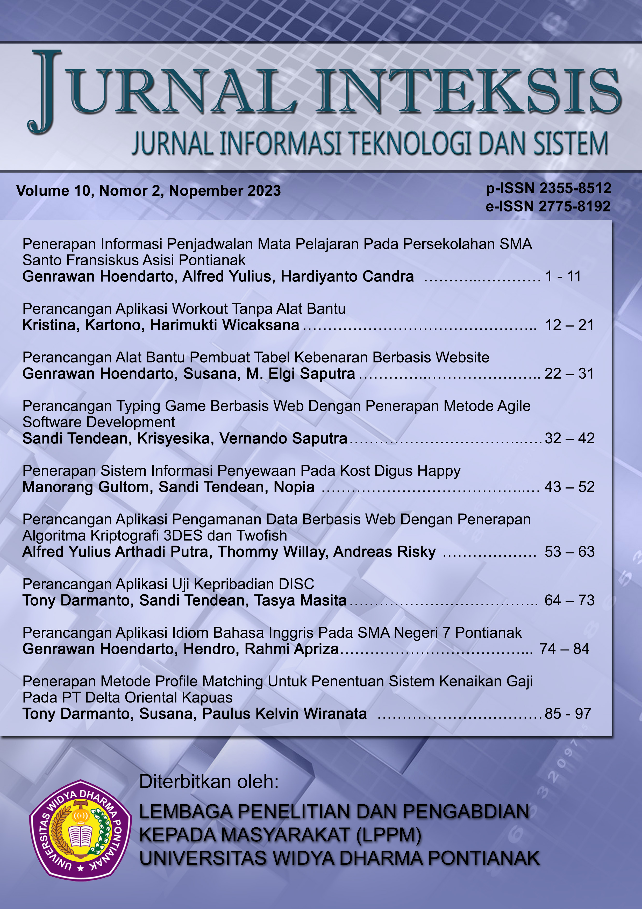
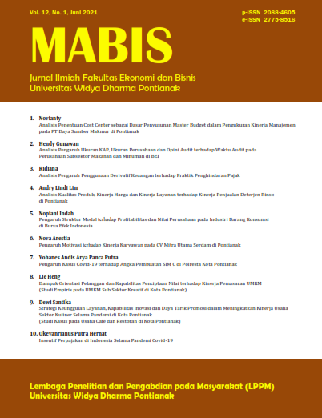

BLESS
BLESS (Bilingualism, Language, and Education Studies) is a peer-reviewed academic journal dedicated to publishing high-quality research in
the fields of bilingualism, linguistics, language teaching, and education. The journal provides a platform for scholars, educators, and practitioners
to share original research, theoretical insights, and practical developments related to language use, language acquisition, bilingual education, and
pedagogy. BLESS welcomes submissions on topics including (but not limited to): language structure and use, second language acquisition, translation
studies, language assessment, classroom-based research, and interdisciplinary studies linking language and education.
Lihat JurnalTerbitan Terkini

FIN-ACC (Finance Accounting)
Jurnal Fin-Acc: Finance and Accounting mencakup berbagai pendekatan yang terkait dengan teknologi, terutama dalam penerapan teknologi terbaru
untuk pengelolaan keuangan dan akuntansi. Beberapa artikel juga menyentuh topik-topik seperti penerapan teknologi data besar, teknologi
akuntansi berbasis blockchain, dan sistem informasi manajemen dalam konteks keuangan dan akuntansi. Jurnal ini disusun dan dikelola sebagai
sarana publikasi mahasiswa akuntasi di Universita Widya Dharma Pontianak yang memberikan akses terbuka kepada pembaca untuk mengakses
artikel-artikel yang dipublikasikan. Untuk mahasiswa, jurnal ini bisa menjadi referensi yang sangat berguna, khususnya dalam memahami
pengembangan terbaru di bidang keuangan dan akuntansi, serta bagaimana teknologi dan inovasi terkini diterapkan dalam bidang tersebut.
Lihat JurnalTerbitan Terkini

BIS-MA (Bisnis Manajemen)
Jurnal Bis-Ma digunakan untuk mempublikasikan hasil penelitian dan pemikiran mahasiswa Program Studi Manajemen dalam kajian manajemen keuangan,
pemasaran, dan sumber daya manusia. Jurnal ini mendukung pengembangan ilmu pengetahuan melalui riset yang dapat memberikan kontribusi signifikan
terhadap pemahaman serta penerapan konsep - konsep bisnis dan ekonomi. Jurnal ini bertujuan untuk memberikan kontribusi terhadap kemajuan
pendidikan di Universitas Widya Dharma Pontianak, serta menjadi media bagi mahasiswa untuk memaparkan hasil karya mereka dalam bentuk yang dapat
diakses oleh berbagai pihak.
Lihat JurnalTerbitan Terkini

MASITIKA
Jurnal ini adalah publikasi ilmiah yang diterbitkan untuk menampung penelitian mahasiswa Universitas Widya Dharma Pontianak. Dengan nama "MASITIKA",
jurnal ini difokuskan sebagai sarana untuk memfasilitasi publikasi karya ilmiah mahasiswa yang berkaitan dengan bidang teknologi, sains, dan rekayasa.
Jurnal ini bertujuan untuk menyediakan platform bagi mahasiswa untuk mempublikasikan hasil riset dan karya ilmiah mereka dalam format yang terstruktur
dan sesuai dengan standar akademik yang berlaku. Jurnal ini mencakup berbagai artikel ilmiah yang menyentuh berbagai topik teknis dan aplikatif,
termasuk penerapan algoritma dalam bidang teknik, sistem perangkat keras dan perangkat lunak, serta berbagai inovasi dalam teknologi dan riset ilmiah.
Sebagai sebuah jurnal mahasiswa, MASITIKA berkomitmen untuk mendukung pengembangan ilmu pengetahuan dan teknologi yang terus berkembang, memberikan
kontribusi terhadap kemajuan pendidikan di Universitas Widya Dharma Pontianak, serta menjadi media bagi mahasiswa untuk memaparkan hasil karya mereka
dalam bentuk yang dapat diakses oleh berbagai pihak.
Lihat JurnalTerbitan Terkini

INTEKSIS
Jurnal Inteksis adalah jurnal ilmiah yang berfokus pada penelitian dalam bidang Informatika, Sistem Informasi, dan Bisnis Digital. Jurnal ini menerima
artikel penelitian berkualitas yang mengkaji berbagai topik seperti rancangan sistem informasi, machine learning, big data, dan keamanan sistem informasi.
Fokus utama jurnal ini adalah pada pengembangan teknologi informasi, baik dari sisi teknis seperti perangkat lunak, maupun aspek teoritis dalam algoritma
dan aplikasi teknologi digital. Ruang lingkup jurnal ini mencakup tiga rumpun utama, yaitu Sistem Informasi, yang meliputi rancangan sistem, jaringan
komputer, dan keamanan informasi; Informatika, yang mencakup machine learning, data mining, IoT, dan image processing; serta Bisnis Digital, dengan topik
seperti digital marketing, business intelligence, dan supply chain management berbasis teknologi. Jurnal Inteksis bertujuan untuk menjadi platform bagi
peneliti dan praktisi yang ingin berbagi temuan dan inovasi dalam dunia teknologi dan bisnis digital.
Lihat JurnalTerbitan Terkini

MABIS
MABIS adalah jurnal ilmiah yang diterbitkan oleh LPPM Universitas Widya Dharma Pontianak. Jurnal ini berfokus pada penerbitan artikel penelitian yang
berkaitan dengan berbagai aspek ekonomi, bisnis, dan manajemen. Tujuan utama Jurnal MABIS adalah untuk menyediakan platform bagi peneliti dan praktisi
untuk berbagi temuan terbaru dalam bidang tersebut. Jurnal MABIS menerima artikel-artikel ilmiah yang berkualitas mengenai topik-topik terkait seperti
manajemen bisnis, strategi bisnis, teknologi informasi dalam bisnis, dan ekonomi energi. Jurnal ini mendukung pengembangan ilmu pengetahuan melalui
riset yang dapat memberikan kontribusi signifikan terhadap pemahaman serta penerapan konsep-konsep bisnis dan ekonomi di dunia nyata.
Lihat JurnalTerbitan Terkini